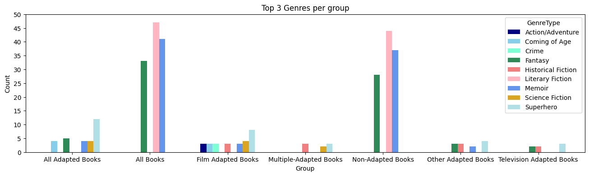

import pandas as pd
import matplotlib.pyplot as plt
import numpy as npThe Recipe to an Adaptation
Resarch by Sujean Gallego
July 31, 2024
I. INTRODUCTION
1. An Overview
adaptation – the action or process of adapting or being adapted.
Or a term to describe a piece of media, usually a television show or movie, that is based on pre-existing work, usually literary or theatrical work.
This type of work is very common, so much so that the Oscars even has a category “Best Adapted Screenplay.” Some of the films that won include:
- The Godfather (1972)
- L.A. Confidential (1997)
- The Lord of the Rings: Return of the King (2003)
- The Social Network (2010)
- Moonlight (2016)
Some recognizable titles also include:
- The Color Purple (1985)
- Shrek (2001)
- Game of Thrones (2011)
- The Handmaid’s Tale (2017)
- The Last of Us (2023)
- Oppenheimer (2023)
And there is so much more!
Quickly scrolling through the list of winners in this category on Wikipedia, I noticed that most of these adaptations are based on novels. Very few were theatrical plays, musicals, and, especially, graphic novels. Of course, this could just be due to the fact that I was looking through a list of Oscar nominees. Maybe the Oscars don’t value adaptations based off of graphic novels. Or maybe the quality of adaptations that were made based on graphic novels were never good enough to gain an Oscar nomination. Or maybe there is just a lack of graphic novels in the literary space to begin with.
World renowned director Martin Scorscese once said, “I don’t think [Marvel movies are] cinema” (Connell). Marvel movies are all adapted works based on graphic novels, specifically in the superhero genre. Now that is a whole different conversation that can be very dividing. Something that I will not be delving into in this project. Nonetheless, this shows how graphic novels as a type of work are largely looked down upon. And this doesn’t just end at the lack of adaptations, this is also seen in literary space as well. They are often looked down upon as a lesser form of literature for their lack of text, abundance of pictures, and themes, which are usually superhero-based (Mwissell). People view them congruent to children’s books, which are less text and picture-based, and therefore view graphic novels work targeted towards children, incapable of revealing deeper meanings and insights to life as novels do.
Now the opposite is seen internationally. Countries such as Japan and South Korea are well known for their adaptations of graphic novels in the media space, and actually seem to be the preferred form of entertainment. Mangas (Japanese graphic novels) have become a major driving force in Japan’s economy (Luster) and top source for adaptations in Japanese entertainment, especially in anime. While not to the same extent, manhwas (South Korean graphic novels) have also been a relevant part of South Korean culture and media. Korean dramas such as The Princess Hours and Boys Over Flowers are examples of Korean entertainment adapted from graphic novels that have accumulated a large cultural significance and an iconic status. Like Japan, South Korean Webtoons—digitally published comics and graphic novels—have become the top source of adaptations for Korean Dramas. It seems much easier to adapt: storyboards are already laid out, a couple of changes can be made to suit the director, the script is basically all written. So…
Why aren’t we seeing the same trend in the United States? Is it really American pride and stigma preventing these graphic novels from receiving an adaptation?
Maybe not…? One example can be seen in Nick Drnasno’s Sabrina, published in 2018, which became the first ever graphic novel to be longlisted for the Booker Prize, a highly prestigious literary award that is selected from a longlist and shortlist of nominees every year (NewStatesman). Winning the Booker Prize basically means that said-book is the “best single work” published in said-year. And being nominated is a great achievement in itself. Sabrina was praised for its mature themes relevant to today’s society which was only elevated by its drawings and visual style (Park). Similar sentiments were met with the graphic novel Persepolis by Marjane Satrapi, which did get an animated feature adaptation in 2007. The film by the same name was also met with great critical acclaim receiving a 97% score on RottenTomatoes (RottenTomatoes).
2. The Question
With so many outside factors it’s hard to determine why graphic novels aren’t more adapted in today’s society. But maybe the books themselves can reveal traits or characteristics that may shed some light on what makes a good graphic novel for adaptation. In this project, I use data from the Graphic Narrative Corpus, to answer the question:
What makes a good graphic novel for adaptation? or What is the recipe for scoring an adaptation as a graphic novel?
3. About the Data
The data was collected by literary scholars and computer and cognitive scientists at Potsdam and Paderborn universities for a research project, funded by the German Federal Ministry of Education and Research. A total of 253 titles published in the United States, Great Britain, Canada, and India are included in the dataset. Requirements for inclusion were that novels had to be written in English, exceed 64 pages in length, tell one continuous story, target an adult audience and form one single volume or a limited series. Both nonfiction and fictional texts are included in the data, with a vast variety of genres. The project ran from 2014-2020, but includes texts published from the mid-70s to 2017, garnered through various types of collections such as academic databases, library collections, and online lists and bibliographies (cite). The GNC has a total of 20 tables [Adaptation, Author, Book, Book Genre, Country, Ethnicity, Format, Gender, Genre, GNSource, Issue, Language, Place, Publisher, RelBookAuthor, RelBookIllustrator, Source, SourceCategory, SelectionSource,Translation] each coming as their own .csv file. It was noted that because they used a “cheap” data GUI, they referred to the book title rather than the ID. In addition, a “Scheme” PDF file was given which lists brief information about each table and their respective variables, however, the table Book Genre was not listed in the pdf, it was only seen briefly in their Corpus Graph visualization. Some of the tables provided were simply selection sources–or listed options/codes–for columns in other variables. Thus, the tables used in this project were not “selection sources” and selected based on their importance in answering the research question. Specifically, we used the tables:
- Adaptation, represented different adaptations (like movie, tv series, novel…) of graphic novels.
- Author, information on the authors and illustrators.
- Book, main table, contains the information on the books.
- Book Genre, provides the genres for each of the books.
- RelBookAuthor, junction table to represent the n:m relationship between the book and its authors.
- Issue, represents the different issues published for a book.
Link: https://groups.uni-paderborn.de/graphic-literature/gncorpus/corpus.php
II. METHODS
1. Importing and Cleaning Code
Importing libraries and .csv files
graphic_novels = pd.read_csv('https://raw.githubusercontent.com/sujean8222/GraphicNovels/main/Book.csv')
adaptations = pd.read_csv('https://raw.githubusercontent.com/sujean8222/GraphicNovels/main/Adaptation.csv')
authors = pd.read_csv('https://raw.githubusercontent.com/sujean8222/GraphicNovels/main/Author.csv')
book_genres = pd.read_csv('https://raw.githubusercontent.com/sujean8222/GraphicNovels/main/BookGenre.csv')
issue = pd.read_csv('https://raw.githubusercontent.com/sujean8222/GraphicNovels/main/Issue.csv')
rel_book_author = pd.read_csv('https://raw.githubusercontent.com/sujean8222/GraphicNovels/main/RelBookAuthor.csv')Data Cleaning/Organization code:
graphic_novels.columns = ['ID', 'Title', 'Mentions', 'Unclear', 'Date Published', 'Image', 'Original Language', 'Foreign Key','GN_Source', 'color_type', 'Limited Series', 'Book Series', 'Unlimited Series', 'ISBN', 'Directory','Avg Rating', 'Number of Ratings', 'Original Title', 'Unlisted', 'Unlisted', 'Unlisted', 'Unlisted', 'University']
adaptations.columns = ['ID', 'BookID', 'Type', 'Title', 'Publication']
authors.columns = ['ID', 'FirstName', 'LastName', 'Gender_ID', 'CountryOfOriginID', 'CountryOfResidence', 'DateOfDeath', 'DateOfBirth', 'Ethnicity', 'PenName']
book_genres.columns = ['ID', 'BookID', 'SourceID', 'GenreID', 'isMain']
issue.columns = ['ID', 'FormatID', 'Edition', 'BookID', 'LanguageID', 'Mentions', 'Pages', 'PlaceOfPublicationID', 'PublisherID', 'Delete', 'Date', 'Width', 'Depth', 'Height', 'Unit']
rel_book_author.columns = ['ID', 'BookID', 'AuthorID']graphic_novels.drop(columns=['Unclear', 'Unlisted', 'Unlisted', 'Unlisted', 'Unlisted', 'University'], inplace=True)
issue.drop(columns='Delete', inplace = True)adaptations.loc[17, ['Type', 'Title', 'Publication']] = ['Television series', 'Games Of Thrones', '2011-04-17']
adaptations.loc[18, ['Type', 'Title', 'Publication']] = ['Television series', 'Games Of Thrones', '2011-04-17']
adaptations.loc[24, 'Publication'] = 'Never Published'
adaptations.loc[42, 'Publication'] = 'Never Published'
adaptations.loc[55, ['Type', 'Title', 'Publication']] = ['Feature film', 'Kakera', '2010-04-03']adaptations = adaptations.drop(index=[24, 42])rel_book_author.loc[26, 'AuthorID'] = 61
rel_book_author.loc[48, 'AuthorID'] = 122
rel_book_author.loc[128, 'AuthorID'] = 64
rel_book_author.loc[132, 'AuthorID'] = 7
rel_book_author.loc[133, 'AuthorID'] = 29
rel_book_author.loc[154, 'AuthorID'] = 11
rel_book_author.loc[219, 'AuthorID'] = 396
rel_book_author.loc[220, 'AuthorID'] = 397authorID = []
for i in rel_book_author['AuthorID']:
if i in authors['ID'].values:
authorID.append(i)authors = authors[authors['ID'].isin(authorID)]authors.loc[233, 'Gender_ID'] = 1authors.loc[[32, 72, 188, 306, 346], 'CountryOfOriginID'] = 'USA'
authors.loc[[103, 212], 'CountryOfOriginID'] = 'Canada'
authors.loc[233, 'CountryOfOriginID'] = 'Iran'authors.loc[[306, 346], 'Ethnicity'] = 'White'issue.loc[136, 'Pages'] = 128
issue.loc[178, 'Pages'] = 152
issue.loc[200, 'Pages'] = 240
issue.loc[285, ['Pages', 'PlaceOfPublicationID', 'PublisherID']] = [240, 'New York, USA', 'Bantam Books']
issue.loc[296, ['Pages', 'PlaceOfPublicationID']] = [224, 'Cincinnati, USA']
issue.loc[318, 'Pages'] = 176rel_book_author.drop_duplicates(subset=['BookID', 'AuthorID'], inplace=True)adaptations['Publication'] = pd.to_datetime(adaptations['Publication'])
adaptations['Year'] = adaptations['Publication'].dt.year
adaptations['Month'] = adaptations['Publication'].dt.month
adaptations['Day'] = adaptations['Publication'].dt.day
graphic_novels['Date Published'] = pd.to_datetime(graphic_novels['Date Published'], format='%m/%d/%y')
graphic_novels['Year'] = graphic_novels['Date Published'].dt.year
graphic_novels['Month'] = graphic_novels['Date Published'].dt.month
graphic_novels['Day'] = graphic_novels['Date Published'].dt.day2. Methodology
Our ultimate goal is to answer the question: “What is the recipe for scoring an adaptation as a graphic novel?
We can begin by asking the question: “What are the traits in books that receive adaptations?”
To do so, we first must identify what kind of traits we want to examine…We look at the exploratory data to determine what factors (or columns) seemed to show the most variabilitly. - graphic_novels’s Year, the published year of books - graphic_novels’s Avg Rating, average ratings out of 5 stars of books on goodreads - graphic_novels’s Number of Ratings, amount of entires of ratings on goodreads - book_genres’s Genre, different genres of books - issues’s Pages, amount of pages per book
**Columns that had a dominant value were not included, as it is likely to be the same for all books.*
Below are some examples of exploratory data visualizations that are relevant to the study:
adaptations['Year'].value_counts().plot(kind='bar', color='brown', figsize=(10, 2), title='Frequency of Adaptations released per year')Most of adaptations were published in the 2000s, specifically between 2005-2013. Adaptations began releasing in the early 1970s.
graphic_novels['Year'].value_counts().plot(kind='bar', color='pink', figsize=(10, 2), title='Frequency of Graphic Novel released per year')Majority of graphic novels were published in the 2000s. There is an upward trend in publication of graphic novels as the years go by. The most popular year to publish was 2015.
graphic_novels.plot.scatter(x = 'Avg Rating', y = 'Number of Ratings', color='pink', figsize=(10, 3), marker = 'o', title='Number of Ratings vs. Average Rating Score')Average book rating is around the 3.6-4.2 range. There is also a small correlation between number of ratings and average rating in that the more number of ratings, the higher average rating a book receives.
We must also identify the different groups we will be comparing.
Since we are testing adapted books, we will have to create a dataframe consisting of all books that have been adapted and compare that between all books and books that have not been adapted. It would also be interesting to test the difference between books that have been adapted more than once, books that have been adapted into a film, television series, and other.
In total, we have the following groups: - adapted books - books - non-adapted books - multiple adapted books - film adapted books - television adapted books - other adapted books
Below is the code we used to create the groupings of dataframes:
Adaptations - made up of all books that have been adapted.
adap_books = adaptations[['BookID']].drop_duplicates().reset_index(drop=True)adap_books_title = []
for index, i in adap_books.iterrows():
for index, book in graphic_novels.iterrows():
if i['BookID'] == book['ID']:
adap_books_title.append(book['Title'])
adap_books['Title'] = adap_books_titleBooks - made up of all books.
books = graphic_novels[['ID', 'Title']]
books.columns = ['BookID', 'Title']Non-Adapted Books - made up of all books that have not been adapated.
no_adap_books = books[~books['BookID'].isin(adaptations['BookID'])].reset_index(drop=True)Multiple-Adapted Books - made up of books that have been adapated more than once.
frequency_adaptations = adaptations['BookID'].value_counts()
frequency_adaptations = frequency_adaptations.reset_index()
frequency_adaptations.columns = ['BookID', 'Count']mult_adap_id = []
for index, book in frequency_adaptations.iterrows():
if book['Count'] > 1:
mult_adap_id.append(book['BookID'])
mult_adap_name = []
for i in mult_adap_id:
for index, book in graphic_novels.iterrows():
if book['ID'] == i:
mult_adap_name.append(book['Title'])mult_adap = pd.DataFrame({'BookID': mult_adap_id, 'Title': mult_adap_name})Film Adapted Books - made up of books that have been adapated into films.
conditions = [adaptations['Type'].str.contains('(?:Film|Movie|Feature)', case=False, regex=True),
adaptations['Type'].str.contains('(?:Television|Series|Mini)', case=False, regex=True)]
choices = [1, 2]
adaptations['TypeCode'] = np.select(conditions, choices, default=3)film_adap_id = adaptations.loc[adaptations['TypeCode'] == 1, 'BookID'].tolist()
film_adap_name = []
for i in film_adap_id:
for index, book in books.iterrows():
if book['BookID'] == i:
film_adap_name.append(book['Title'])
film_adap = pd.DataFrame({'BookID': film_adap_id, 'Title': film_adap_name})
film_adap = film_adap.drop_duplicates().reset_index(drop=True)Television Adapted DataFrame - made up of books that have been adapted as a television series or miniseries.
tel_adap_id = adaptations.loc[adaptations['TypeCode'] == 2, 'BookID'].tolist()
tel_adap_name = []
for i in tel_adap_id:
for index, book in books.iterrows():
if book['BookID'] == i:
tel_adap_name.append(book['Title'])
tel_adap = pd.DataFrame({'BookID': tel_adap_id, 'Title': tel_adap_name})
tel_adap = tel_adap.drop_duplicates().reset_index(drop=True)Other Adapted DataFrame - made up of books that have been adapated as plays, video games, novels, etc.
oth_adap_id = adaptations.loc[adaptations['TypeCode'] == 3, 'BookID'].tolist()
oth_adap_name = []
for i in oth_adap_id:
for index, book in books.iterrows():
if i == book['BookID']:
oth_adap_name.append(book['Title'])
oth_adap = pd.DataFrame({'BookID': oth_adap_id, 'Title': oth_adap_name})
oth_adap = oth_adap.drop_duplicates().reset_index(drop=True)Below is the code to create a function that we can run our dataframes through to get the top traits we identified earlier:
def top_traits(df, book_id):
id_list = df[book_id].tolist()
year_list = []
avg_rating_list = []
num_rating_list = []
genre_list = []
page_list = []
for i in id_list:
for index, row in graphic_novels.iterrows():
if i == row['ID']:
year_list.append(row['Year'])
avg_rating_list.append(row['Avg Rating'])
num_rating_list.append(row['Number of Ratings'])
for index, row in book_genres.iterrows():
if i == row['BookID']:
genre_list.append(row['GenreID'])
for index, row in issue.iterrows():
if i == row['BookID']:
page_list.append(row['Pages'])
genre_count = pd.DataFrame(genre_list).value_counts().reset_index()
genre_count.columns = ['GenreType', 'Count']
genre_count = genre_count.groupby('Count').agg(list).reset_index()
genres = genre_count[genre_count['Count'] > 1].sort_values(by='Count', ascending=False).reset_index(drop=True)
year = sum(year_list)/len(year_list)
avg_rating = sum(avg_rating_list)/len(avg_rating_list)
num_rating = sum(num_rating_list)/len(num_rating_list)
pages = sum(page_list)/len(page_list)
return (round(year, 2),
round(avg_rating, 2),
round(num_rating, 2),
round(pages, 2),
genres.head(3))III. Results
adap_traits = top_traits(adap_books, 'BookID')
books_traits = top_traits(books, 'BookID')
no_adap_traits = top_traits(no_adap_books, 'BookID')
mult_adap_traits = top_traits(mult_adap, 'BookID')
film_adap_traits = top_traits(film_adap, 'BookID')
tel_adap_traits = top_traits(tel_adap, 'BookID')
oth_adap_traits = top_traits(oth_adap, 'BookID')traits_df = pd.DataFrame({
'Group':['All Adapted Books', 'All Books', 'Non-Adapted Books', 'Multiple-Adapted Books', 'Film Adapted Books', 'Television Adapted Books', 'Other Adapted Books'],
'Year':[adap_traits[0], books_traits[0], no_adap_traits[0], mult_adap_traits[0], film_adap_traits[0], tel_adap_traits[0], oth_adap_traits[0]],
'Avg Rating':[adap_traits[1], books_traits[1], no_adap_traits[1], mult_adap_traits[1], film_adap_traits[1], tel_adap_traits[1], oth_adap_traits[1]],
'Total Ratings':[adap_traits[2], books_traits[2], no_adap_traits[2], mult_adap_traits[2], film_adap_traits[2], tel_adap_traits[2], oth_adap_traits[2]],
'Pages':[adap_traits[3], books_traits[3], no_adap_traits[3], mult_adap_traits[3], film_adap_traits[3], tel_adap_traits[3], oth_adap_traits[3]],
'Genres':[adap_traits[4], books_traits[4], no_adap_traits[4], mult_adap_traits[4], film_adap_traits[4], tel_adap_traits[4], oth_adap_traits[4]]
})sources = ['All Adapted Books', 'All Books', 'Non-Adapted Books',
'Multiple-Adapted Books', 'Film Adapted Books',
'Television Adapted Books', 'Other Adapted Books']
genre_traits_df = []
for i, source in enumerate(sources):
genres = traits_df.loc[i, 'Genres'].explode('GenreType')
genres['Source'] = source
genre_traits_df.append(genres)
genre_traits_df = pd.concat(genre_traits_df)genre_traits_df = genre_traits_df.pivot(index='Source', columns='GenreType', values='Count')The Ideal Year
year_plot = traits_df.plot.bar(x='Group', y='Year', color='cornflowerblue', rot=0, figsize=(16,4), xlabel='Type of Group', ylabel='Year', title='Average Year Book Published per Group of Books')
year_plot.set_ylim(1995, 2005)
ticks = np.arange(1995, 2006, 1)
year_plot.set_yticks(ticks)
plt.show()
- The average year published of all books lies around the year 2004.
- Books that have been adapted seem to come from books published around or before the year 2000.
- Books that have not been adapated on average have been newer releases, at least later than the average of all books.
- Books that have received multiple adaptations significantly come from books published before the 2000s, around 1997-1998.
- For books within adaptations, television adapated books have been published much later (newer) than film adapted and other adapted books.
The Ideal Rating Score
avg_ratings_plot = traits_df.plot.bar(x='Group', y='Avg Rating', color='cornflowerblue', rot=0, figsize=(16,4), xlabel='Type of Group', ylabel='Average Rating Score', title='Average Rating Score per Group of Books')
avg_ratings_plot.set_ylim(3.5, 5)
plt.show()
- The average rating of All Books lies just below 4.00.
- Non-Adapted Books barely has any difference from the rating score of all books.
- Adapted Books perform much better in ratings than all books and non-adapted books, with an average score higher than 4.00.
- Multiple-Adapted Books, Film, telelvision, and other adapted books performed around the same mark of all adapted books, 4.00.
The Ideal Amount of Ratings
avg_number_plot = traits_df.plot.bar(x='Group', y='Total Ratings', color='cornflowerblue', rot=0, figsize=(16,4), xlabel='Type of Group', ylabel='Average Total of Ratings', title='Average Total of Ratings per Group of Books')
avg_number_plot.set_ylim(0, 70000)
plt.show()
- All books have an average of around 15,000 entries of ratings.
- All Adapted books have a much larger amount of ratings than all books and non-adapted books, with 40,0000 entries
- Multiple-Adapted books have the highest amount of ratings with almost 70,000 entires.
- Film adapted books have ratings entries around 55,0000.
- Television adapated books have surprisingly low amounts of ratings, around the 10,000 mark.
The Ideal Amount of Pages
pages_plot = traits_df.plot.bar(x='Group', y='Pages', rot=0, figsize=(16,4), xlabel='Type of Group', ylabel='Pages', color='cornflowerblue', title='Average Number of Pages per Group of Books')
ticks = np.arange(0, 500, 50)
pages_plot.set_yticks(ticks)
plt.show()
- All Books have an average around 250 pages.
- Non-adapted books fall just below All book pages.
- All Adapted Books are about 50 pages more in length than all books, with an average around 300
- Multiple Adapted Books are much higher in length, almost an average of 450 pages.
The Ideal Genre
genre_plot = genre_traits_df.plot.bar(figsize=(16,4), xlabel='Group', width = 0.7, rot=0, color=['navy', 'skyblue', 'aquamarine', 'seagreen', 'lightcoral', 'lightpink', 'cornflowerblue', 'goldenrod', 'powderblue'], title='Top 3 Genres per group', ylabel='Count')
ticks = np.arange(0, 55, 5)
genre_plot.set_yticks(ticks)
plt.show()
- All Books and Non-Adapted books have the same top three genres: Literary Fiction, Memoir, and Fantasy.
- All Adapted Books top genres are Superhero, Fantasy, and, at a tie, Coming-Of-Age, Memoir, and Science Fiction.
- Film Adapted Books have the most variability in genres with the top genres beings: Superhero, Science Fiction, and Action/Adventure, Coming-Of-Age, Crime, Historical Fiction, and Memoir.
- Multiple Adapted Books most popular genre is Historical Fiction.
IV. Discussion
THE RECIPE FOR AN ADAPTATION:
- Write a Superhero graphic novel (can substitute with Fantasy, Memoir, Coming-Of-Age, or Science Fiction)
- Write at least 295.87 pages
- Publish around 1999-2000
- Get at least 39,680 people to read it and rate it.
- Have those people rate the book at least 4 out of 5 stars.
The ‘recipe’ above more so defines the average book that has been adapted, and less what it really takes to get a novel adapted. In truth, the recipe is unreplicable, an important part of recipes. For one, it is impossible to go back in time and publish a book. Therefore, it is important to think about the context in which these results and data come from. The graphic novels we are sampling are primarily United States published, English language, adult-oriented books. By only including books that have been published in the English language, the collectors cut out a large portion of untranslated international work that would have likely had more variety in genre and subject matter, as their graphic novels target a predominantly adult audience. It’s also important to note that the data was collected from 2016-2020, and capped published books in 2017. The earliest collected data is from the mid-70s, meaning that there are over 20 years of graphic novels published before the 2000s, and only 17 years after. This creates an obvious bias or skew towards books published in earlier years which affects the rest of the traits that reflect their cultural and societal trends. The earliest form of graphic novels in the U.S. begin with the comics from Marvel, who focus on the superhero genre. In the 60s, they began to extend their themes into longer pieces of work becoming considered graphic ‘novels’ targeted towards an older audience. This resurgence of the genre resulted in a positive feedback loop, where more popularity led to more books being made which resulted in more popularity.
Not only does this make graphic novels’s subject matter, genre, and values biased towards their cultural time, but their publishing year gives them an advantage of additional years to get read and rated across a greater audience and developed into an adaptation. The Walt Disney Production Company’s acquisition of Marvel comics led to the inevitable production of several adaptations of their comics. And the success of these films promoted the originals, which led to more people reading the book and rating it. We need to consider that the high ratings of stars and amount of ratings might be a result of being the original source of a beloved film. Since we have no exact data that lists the books’ scores and entries of ratings before getting adapted, it’s impossible to determine what the numbers that aided them to get adapted are. In fact, there is a large variability between the different adaptations, which leads us to call for uncertainty. Film-adapted books have a much higher total of rating entries with a total of 48,965, than television-adapted books that have a total of 8,438. However, the star ratings show television on top with an average of 4.11 stars and film with a rating of 4.05. Television-adapted books are also the latest published year, 2002, within all adaptations, all of which fall below the year 2000. This may further prove that their lack of entries in ratings is due to their earlier publishing date. Hence, all books published in later or recent years do not statistically perform as well as the earlier publications because they fall victim to their time of publishing and the time this data was collected.
This matter of timing also affects their inclusion of being considered an adaptation in this dataset. On average, it takes about 5-10 years for a film or television series to go into production and eventually get released (Dev-Dorrance). So, for example, if a book had been released in 2016, and got picked up for an adaptation in the same year, their adaptation wouldn’t get released until 2021~2026, and by that time data collection and the entire project would be closed. Looking at the data visualizations that concern all graphic novels, there seems to have been an increase in production of the medium as well as a variety in genre. Non-adapted books have the highest year average of 2004 followed by all books that have an average of 2003. Individual counts show that the most graphic novels were published in 2015, followed by 2012, and 2009. The graph is heavily skewed towards publishing years after the 2000s with a lot of the 1990s books trailing at the end. If we look at the genres of these newer releases, we can see a majority of books written in Literary Fiction, followed by Memoir and Science Fiction, given the fall in popularity of superhero books and films in recent years. Thus, if we fast forward 20 years from now, it’s likely that we will see an increase of those genres in adaptations.
However, our results do not completely fail to answer the question…
While it is not possible to list exact numbers of pages, ratings, etc. We can look at trends in the graph comparing all books and all adapted books to give a rough estimate that would be ideal. When considering terms like these,
UPDATED RECIPE:
- Write a graphic novel in any genre
- Write at least 50 pages longer than the average graphic novel.
- Publish now (the earlier the better).
- Get people to read it and become a popular book.
- Have the book be rated higher in quality than the average graphic novel.
*The underlying discovery is that there is a strong importance in writing about subject matters and themes for the time we are living in—reflecting cultural and societal values of the current time. That’s what led Marvel to become so popular as they displayed American heroes winning in a time of war. Exposure is the greatest tool to help one get adapted and following trends or commenting on current cultural and societal issues is a good way to relate to a greater audience. Writing a superhero prohibition graphic novel in 2020 is not likely to relate to an audience and circulate among many, and lacks the relevance to prompt an adaptation (RandomNotes).
In the end, do graphic novels need an adaptation?
No.
They don’t. But it would be nice. When novels or ideas get bought out, authors receive a payout and recognition that cements their hard work among others and themselves. It’s a sort-of honor to get one’s work made into a series or film, or anything really. As someone once said, imitation is the greatest form of flattery. Regardless of adaptation or not, graphic novels are severely underrated and deserve more recognition for the dedication of the writers and illustrators. Just because a book has pictures doesn’t mean we should discount its relevance, the quality of story and writing should be the greatest indicators of whether a book is good or not and deserving of an adaptation.
Works Cited
Connell, Pat. “A Rebuttal to Martin Scorsese’s Comments on Marvel.” The Heights, 24 Nov. 2023, www.bcheights.com/2023/11/24/a-rebuttal-to-martin-scorseses-comments-on-marvel/.
Dev-Dorrance. “Page to Screen: How Books Become Movies.” Dorrance Publishing Company, 5 June 2019, www.dorrancepublishing.com/page-to-screen-how-books-become-movies/#:~:text=Movies%20can%20take%20a%20year%20in%20development,director%20is%20offered%20the%20next%20Marvel%20movie.
Luster, Joseph. “Manga Sales in Japan Reached Highest Point in History in 2022.” Otaku USA Magazine, 27 Feb. 2023, otakuusamagazine.com/manga-sales-in-japan-reached-highest-point-in-history-in-2022/.
Mwissell. “Graphic Novels Fall Victim to ‘Social Norms’ Too.” Comics Studies, 11 Nov. 2022, marywashicomics.net/article/graphic-novels-fall-victim-to-social-norms-too/.
“News for Authors.” Random Notes, authornews.penguinrandomhouse.com/trends-and-cultural-impact-in-graphic-books-novels-memoirs-comics-and-more/.
Park, Ed. “Can You Illustrate Emotional Absence? These Graphic Novels Do.” The New York Times, The New York Times, 31 May 2018, www.nytimes.com/2018/05/31/books/review/nick-drnaso-sabrina.html.
“Persepolis.” Rotten Tomatoes, www.rottentomatoes.com/m/persepolis.
“The Booker’s Big Bang.” New Statesman - The Booker’s Big Bang, web.archive.org/web/20120227193902/www.newstatesman.com/books/2008/10/booker-prize-british-literary.